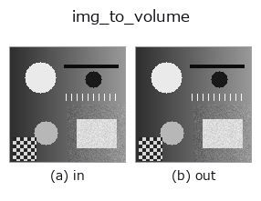
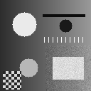

bridge op• 資料種類:image → volume
• 呼叫:fullseye.apply(img, "img_to_volume", a=0.5, b=0.5)(2-D 的模型是一張圖 + 兩個純量旋鈕 a,b∈[0,1])

*圖為在 128×128 合成輸入上實際執行的輸出。左為輸入，右為輸出。點雲以俯視散點顯示(亮度 = z)，一維序列為折線，體資料為沿 z 的最大值投影，影片為中間影格，複數影像為振幅；無法成像的回傳值直接顯示數值。*
掃描旋鈕 a(0.1 / 0.5 / 0.9，另一旋鈕取預設):
▸ img_to_volume: knob a sweep (docs site)
掃描旋鈕 b(0.1 / 0.5 / 0.9，另一旋鈕取預設):
▸ img_to_volume: knob b sweep (docs site)
換別的影像(合成場景 / 照片 / 硬幣。上排為輸入，下排為對應輸出。旋鈕取預設):
▸ img_to_volume: other inputs (docs site)
*第 4 欄是彩色 (H,W,3) 輸入。此運算子能正確處理顏色而不跨通道(不把顏色通道當作第三個空間軸摺積)。*
動態(GIF: 依序顯示影格 / 視點 / 切片。靜態圖是完整版，GIF 為輔助):

把影像當作高度場擠出為 (D,H,W) 體資料(z 在前)。
> 以下的詳細說明為原文 —— 摘要與標題已翻譯。
ボクセル `(z, y, x)` は、その高さが画素の高さ以下なら画素値、超えていれば 0:
`vol[z, y, x] = img[y, x] if z <= img[y, x] * s * (D - 1) else 0`。
つまり 高さ場の「中身が詰まった」固体(地形・段差・押し出し部品)で、
体積の族(`vol_dilate / vol_erosion_ball / macro_vol_denoise` …)を
1 枚の画像から試せる。軸順は 3-D 台帳の規約どおり (depth, row, col)。
• `a → 高さの倍率 s = 0.25 + 1.75 * a`(a=0.5 で 1.125。1 を超えた分は
最上段 `D-1` で頭打ち)。
• `b → 段数 D = 8 + 2 * int(b * 28)`(b=0.5 で 36、b=0 で 8、b=1 で 64)。
• 返り値: `(D, H, W)` float64、値域は入力と同じ。**z=0 の底面は
値 > 0 の画素がすべて詰まる**(高さ 0 でも底面には乗る)。
• 範例資料目錄(下載 URL / 授權) —— 2-D 用 skimage.data(BSD/公有領域)加合成圖,3-D 給出真實資料源(Stanford/PDS 等)的下載 URL。
• 運算子來歷與參考文獻 —— 該運算子族所依據的研究/方法出處。
• 演算法的正典(作者・年份)與用途見上面的族使用指南。
下面的程式已確認可以執行(與圖相同的輸入)。在 Studio 說明中，此區塊會變成按鈕，可當場載入並執行。
img_to_volume 0.50 0.50
▸ Load this pipeline · Load & run
• gallery2d_bridge — py -3.11 examples/gallery2d_bridge.py
volume 作為輸入)identity · vol_gaussian · vol_median · vol_erode · vol_dilate · vol_threshold · vol_reg_dilate · vol_reg_erode
bridge)img_to_points · img_to_keypoints · img_to_signal · img_to_counts · img_to_matrix · img_to_video · img_to_lightfield · img_to_rgb
*Provenance: ops.py — 2D 運算子登記表。本條目由 tools/opdocs.py md 自動產生(請勿手動編輯)。*
© 2026 Kazufumi Furuse — Fullseye operator documentation. Licensed under Apache-2.0.
{kind=link}
{kind=link}
{kind=link}